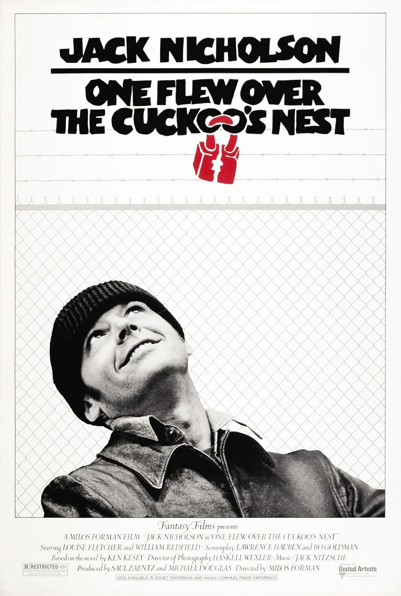

One Flew over the Cuckoo's Nest
48th Academy Awards
(Oscars 1976)
9 Nominations, 5 Awards
| Nominations | ||
|---|---|---|
| Category | Nominees | Result |
| Best Picture | Michael Douglas and Saul Zaentz | Won |
| Actor | Jack Nicholson | Won |
| Actress | Louise Fletcher | Won |
| Actor in a Supporting Role | Brad Dourif | Nominated |
| Directing | Milos Forman | Won |
| Writing (Screenplay Adapted from Other Material) | Bo Goldman and Lawrence Hauben | Won |
| Cinematography | Bill Butler and Haskell Wexler | Nominated |
| Film Editing | Lynzee Klingman, Richard Chew, and Sheldon Kahn | Nominated |
| Music (Original Score) | Jack Nitzsche | Nominated |